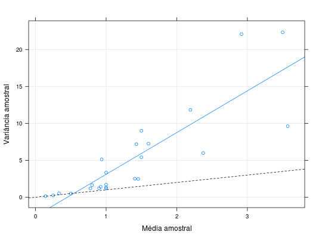
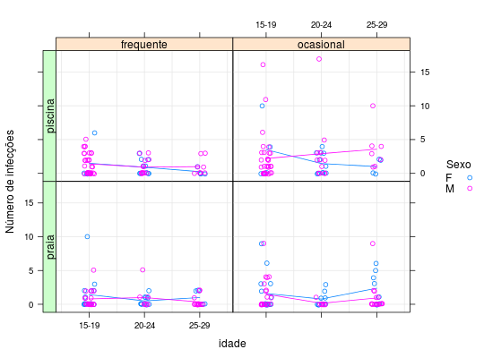

Dados referentes a um estudo realizado em 1990 com recrutas americanos em que a variável de interesse era o número de infecções de ouvido. Além disso, foram coletadas as seguintes informações sobre os recrutas: hábito de nadar, local em que costuma nadar, idade e sexo.
Um data.frame com 287 observações e 5 variáveis.
habitoocasional ou frequente).localpraia ou piscina).idade15-19, 20-24 e 25-29).sexoF para feminino e M para
masculino).ninfecPAULA (2004), Exercício 4.6.15, pág. 346.
Hand, D. J, Daly, F., Lunn, A. D., McConway, K. J., Ostrowski, E. (1994). A Handbook of Small Data Sets. Chapman and Hall, London.
data(PaulaEx4.6.15)#> Warning: data set ‘PaulaEx4.6.15’ not foundstr(PaulaEx4.6.15)#> 'data.frame': 287 obs. of 5 variables: #> $ habito: Factor w/ 2 levels "frequente","ocasional": 2 2 2 2 2 2 2 2 2 2 ... #> $ local : Factor w/ 2 levels "praia","piscina": 2 2 2 2 2 2 2 2 2 2 ... #> $ idade : Factor w/ 3 levels "15-19","20-24",..: 1 1 1 1 1 1 1 1 1 1 ... #> $ sexo : Factor w/ 2 levels "F","M": 2 2 2 2 2 2 2 2 2 2 ... #> $ ninfec: int 0 0 0 0 0 0 0 0 0 0 ...xt <- xtabs(ninfec ~ ., data = PaulaEx4.6.15) ftable(prop.table(xt))#> sexo F M #> habito local idade #> frequente praia 15-19 0.050251256 0.040201005 #> 20-24 0.012562814 0.017587940 #> 25-29 0.015075377 0.012562814 #> piscina 15-19 0.015075377 0.113065327 #> 20-24 0.022613065 0.030150754 #> 25-29 0.002512563 0.020100503 #> ocasional praia 15-19 0.060301508 0.075376884 #> 20-24 0.017587940 0.002512563 #> 25-29 0.047738693 0.037688442 #> piscina 15-19 0.035175879 0.170854271 #> 20-24 0.040201005 0.087939698 #> 25-29 0.010050251 0.062814070plot(xt, xlab = "Hábito", main = "")mv <- aggregate(ninfec ~ ., data = PaulaEx4.6.15, FUN = function(x) { c(mu = mean(x), var = var(x)) }) library(lattice) # Relação Média Variância xyplot(ninfec[, "var"] ~ ninfec[, "mu"], data = mv, ylab = "Variância amostral", xlab = "Média amostral", panel = function(x, y) { panel.xyplot(x, y, type = c("p", "r"), grid = TRUE) panel.abline(a = 0, b = 1, lty = 2) })library(latticeExtra) useOuterStrips( xyplot(ninfec ~ idade | habito + local, groups = sexo, data = PaulaEx4.6.15, jitter.x = TRUE, jitter.y = TRUE, type = c("p", "g", "a"), ylab = "Número de infecções", auto.key = list(space = "right", cex.title = 1, title = "Sexo")) )